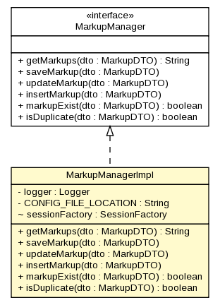

gov.nih.nci.ncia.markup
Class MarkupManagerImpl

java.lang.Object
 gov.nih.nci.ncia.markup.MarkupManagerImpl
gov.nih.nci.ncia.markup.MarkupManagerImpl
- All Implemented Interfaces:
- MarkupManager
public class MarkupManagerImpl
- extends java.lang.Object
- implements MarkupManager
| Methods inherited from class java.lang.Object |
clone, equals, finalize, getClass, hashCode, notify, notifyAll, toString, wait, wait, wait |
logger
private static org.apache.log4j.Logger logger
CONFIG_FILE_LOCATION
private static java.lang.String CONFIG_FILE_LOCATION
sessionFactory
org.hibernate.SessionFactory sessionFactory
MarkupManagerImpl
public MarkupManagerImpl()
- Constructor
getMarkups
public java.lang.String getMarkups(MarkupDTO dto)
- Description copied from interface:
MarkupManager
- Processes requests for both HTTP
GET and POST methods.
- Specified by:
getMarkups in interface MarkupManager
saveMarkup
public void saveMarkup(MarkupDTO dto)
- Specified by:
saveMarkup in interface MarkupManager
updateMarkup
public void updateMarkup(MarkupDTO dto)
- Specified by:
updateMarkup in interface MarkupManager
insertMarkup
public void insertMarkup(MarkupDTO dto)
- Specified by:
insertMarkup in interface MarkupManager
markupExist
public boolean markupExist(MarkupDTO dto)
- Specified by:
markupExist in interface MarkupManager
isDuplicate
public boolean isDuplicate(MarkupDTO dto)
- Specified by:
isDuplicate in interface MarkupManager